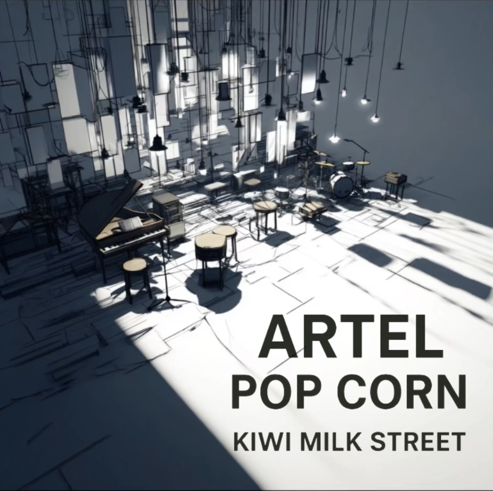

Rainbow Corp. — 2026

KIWI MILK STREET
Artel Pop Corn
Tracklist
1
Cactus
2
DA Green
3
BaZL
4
Everything Is Blue
5
Pandorium
6
Carnaval
7
Hercule
8
BaoBa
9
Lost Poem
Écouter sur Spotify
Toutes les plateformes
© 2026 Rainbow Corp. — Minimal House — Paris